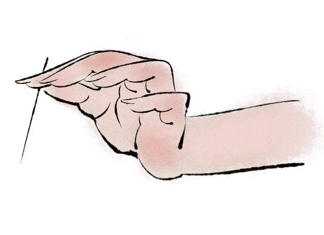
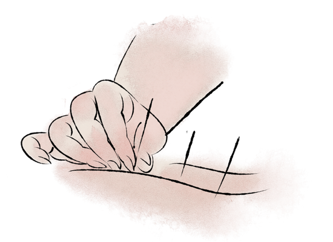
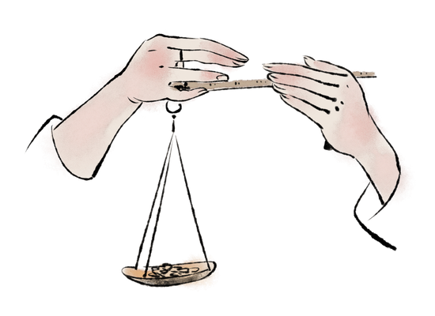
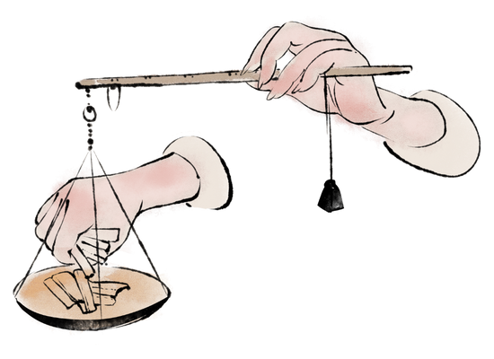
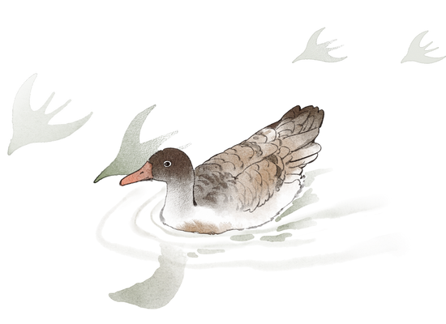

李时珍的祖父是草药医生，父亲李言闻是当时名医，曾任太医院吏目。当时民间医生地位低下，生活艰苦，其父不愿李时珍再学医药。
1532年，李时珍14岁时随父到黄州府应试，中秀才而归。李时珍出身于医生世家，自幼热爱医学，并不热衷于科举，其后曾三次赴武昌应试，均不第，故决心弃儒学医，钻研医学。
1541年，23岁的李时珍随其父学医，医名日盛。
李时珍，字东璧，蕲州人。祖某，父言闻，世孝友，以医为业。年十四，补诸生。三试于乡，不售。读书十年，不出户庭，博学无所弗窥。善医，即以医自居。（顾景星《李时珍传》）
李时珍在为太医期间，积极地从事药物研究工作，经常出入于太医院的药房及御药库，认真仔细地比较、鉴别各地的药材，同时还有机会饱览了王府和皇家珍藏的丰富典籍，开阔眼界，丰富知识——这是一位太医的故事。
明世宗嘉靖三十年（1551年），李时珍33岁时，因治好了富顺王朱厚焜儿子的病而医名大显，被武昌的楚王朱英裣聘为王府的“奉祠正”，兼管良医所事务。
富顺王嬖庶孽，欲废适子。会适子疾，时珍进药，曰附子和气汤。王感悟，立适子。楚王闻之，聘为奉祠，掌良医所事。世子暴厥，立活之。（顾景星《李时珍传》） 
明嘉靖三十五年（1556年）李时珍又被推荐到太医院工作，授“太医院判”职务。三年后，又被推荐上京任太医院判。任职一年，便辞职回乡。
荐于朝，授太医院判，一岁告归。（顾景星《李时珍传》）
明世宗嘉靖三十七年（1558年），李时珍从太医院辞官还乡后，坐堂行医，致力于对药物的考察研究。
在此，他以自己的字“东璧”为堂号，创立了东璧堂。
李时珍在数十年行医以及阅读古典医籍的过程中，发现古代本草书中存在着不少错误，决心重新编纂一部本草书籍——这是一位医学著作家的故事。
明世宗嘉靖三十一年（1552年），李时珍着手开始编写《本草纲目》，以《证类本草》为蓝本，参考了800多部书籍。
......其略曰：臣幼苦羸疾，长成钝椎，惟耽嗜典籍，奋切编摩，纂述诸家，心殚厘定。伏念本草一书，关系颇重，谬误实多，窃加订正。（《白茅堂集》第三十八卷）
从嘉靖四十四年（1565年）起，李时珍多次离家外出考察，足迹遍及湖广、江西、直隶许多名山大川，弄清了许多疑难问题。
重复者芟之，遗缺者补之。旧药一千五百一十八，今增三百七十四；分一十六部，五十二卷。正名为纲，附释为目，次以集解、辨疑、正误，详其出产、气味、主治。（《白茅堂集》第三十八卷）
经过27年的长期努力，于明神宗万历六年（1578年）完成《本草纲目》初稿，时年61岁。以后又经过10年三次修改，前后共计40年。
上自坟典，下至稗记，凡有攸关，靡不收掇。虽命医书，实赅物理。（《白茅堂集》第三十八卷）
万历二十一年（公元1593年），李时珍去世。万历二十五年（1596年），也就是他逝世后的第三年，《本草纲目》在金陵（今南京）正式刊行。
晚年，自号濒湖山人。所著诗文他集失传，惟《本草纲目》行世。（《白茅堂集》第三十八卷）。
